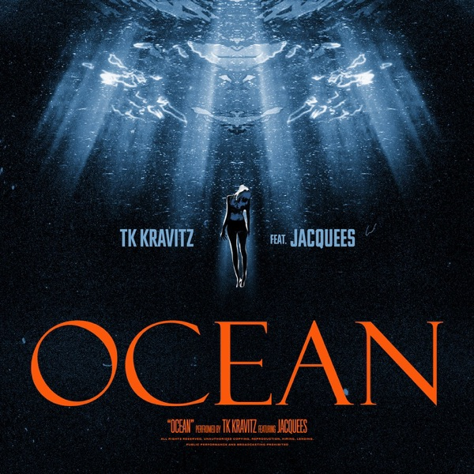
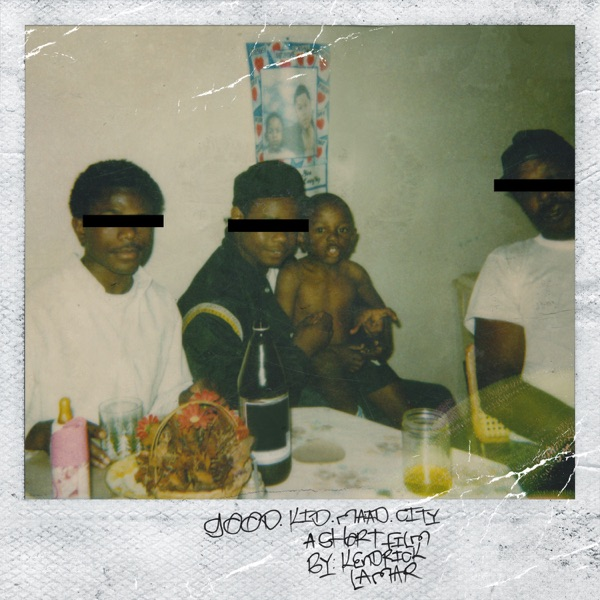
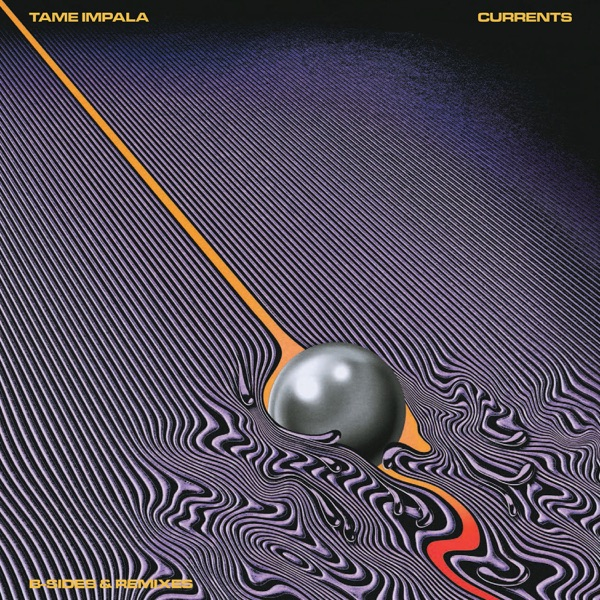

Real assets now: the cards below use a real scanned paper-fiber texture and real album covers (pulled live from the iTunes catalog) — no more gradients or CSS fakes. The paper & material are ours; the covers and words are the user's.
still to generate (needs a Gemini key): the holographic CD-R disc + jewel case, shot as clean product photos
01 · the note — real cover on real paper

LN-0417 · FRI 02:14 AM
In Rainbows
Radiohead · 2007
★★★★☆
the moment it opens up — everything just lands at once. 2am on a night bus and it finally made sense.
MADE BY @ANUSHASHARE ↗
02 · the feed — same paper, real covers, different people

Blonde
Frank Ocean
★★★★★
cried on the 24 bus lol. self control still gets me.
@theo11:40 PM
IGOR
Tyler, the Creator
★★★★☆
track 4 is unreal. put it on the second i got home.
@maya9:02 PM

good kid, m.A.A.d city
Kendrick Lamar
★★★★★
sing about me. best closing run in rap.
@cole8:15 PM

Currents
Tame Impala
★★★★☆
let it happen — 8 mins i never want to end.
@dev6:30 PM
SOS
SZA
★★★★★
nobody gets it. and somehow everybody does.
@kira5:12 PM
In Rainbows
Radiohead
★★★★☆
reckoner on repeat. still my favourite ending.
@nora3:20 PM
Now real: scanned paper-fiber texture (multiply-blended over a warm paper tone) + real iTunes cover art + the user's words in clean type + mono catalog labels. Next, once you drop in a Gemini API key: I'll generate the rich product-shot assets — a holographic CD-R disc (album art as its printed label) and a jewel case — and build the review/experience page where the note opens and the CD comes out. That's the piece that makes it look truly rich.